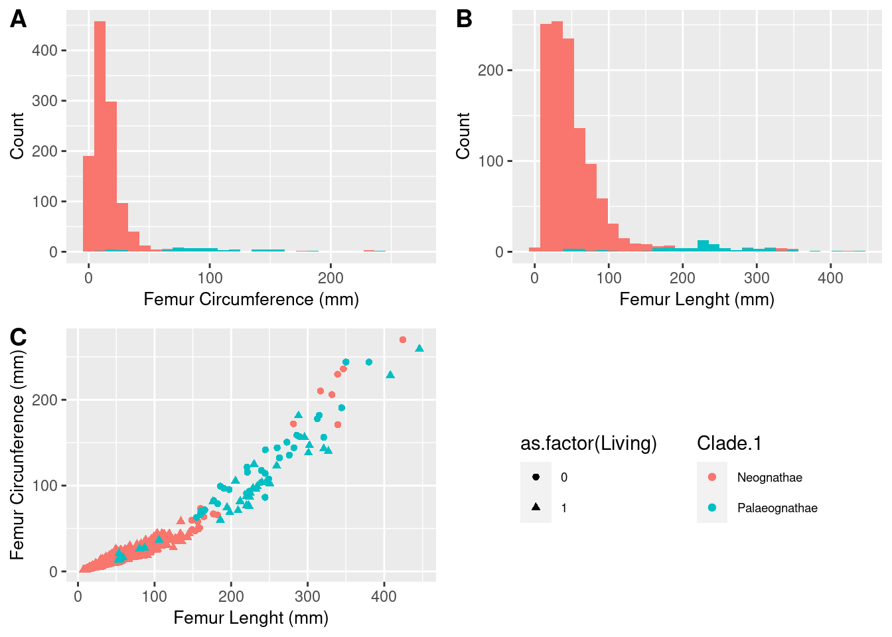
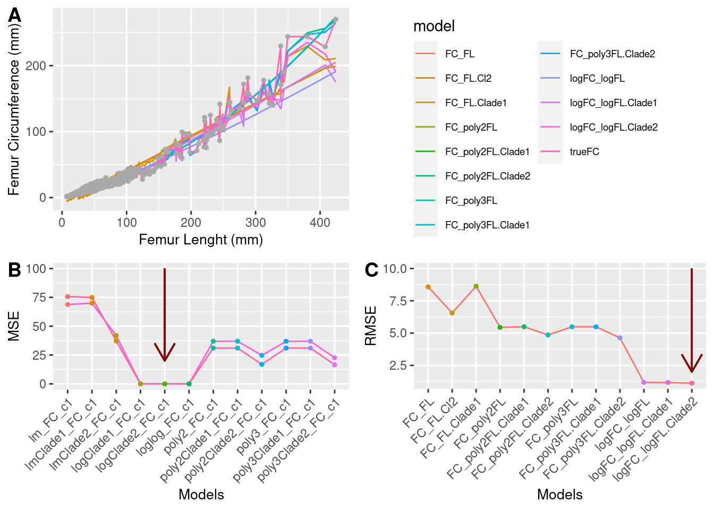

| orders | Species | Obs |
|---|---|---|
| 39 | 589 | 1465 |
Predicting body mass in bipedal dinosaurs
Introduction
Body mass is one of the significant variables in the biology of an organism. Body mass (BM) could provide insights into their physiology, ecology, or behavior. Indeed, BM could influence speciation and extinction rates, driving patterns such as giantism in some vertebrates like dinosaurs, whales, and ratites. However, while obtaining BM data from extant species is relatively straightforward, it becomes challenging when attempting to obtain this variable for extinct organisms. Therefore, prediction becomes the only viable method to obtain this feature.
Various methods exist to reconstruct body size, shape, and weight from preserved skeletons (Fossils). The most popular approaches are volumetric density (VD) and extant scaling (ES). Although VD was the initial proposal for calculating BM, ES is currently the most widely used tool. It is based on linear models, is easy to replicate and use, and is more cost-effective compared to the scans used by VD. However, current models have faced criticism due to their potential to over- or under-estimate BM. Another challenge arises from the distinct distribution of mass in quadrupeds compared to bipeds, leading to more complexities in calculating the BM of bipeds as predictors need to be restricted only to forelimbs. Furthermore, the wide range of BM distribution in modern birds, ranging from 50g to 130,000g, presents an additional challenge, especially when considering the presence of giantism in the Palaeognatha group, which is represented as an outlier in the distribution.
To address the biped issue, some researchers have proposed models that exclusively utilize modern birds (excluding Palaeognathes), incorporate humans, or eliminate the humerus as a covariant. However, no attempts have been made to fit a model using different datasets, including ratites as an essential part of the sample. Re-evaluating the proposed models is thus warranted, considering that this group could serve as a good proxy for the BM of dinosaurs.
Materials and Methods
Preliminar data set
uni diferentes bases de datos considerando que tuvieran representantes de todos los ordenes actuales en aves, que contenieran body mass y circunferencia. Estas bases de datos fueron principalmente los set de datos que se han usado para ajustar los modelos previamente propuesto, y adicionalmente otras que han sido usadas para propositos de analysis evologicos y evolutivos. Cuide que estas tuvieran principalmnete body mas y circunferencia de femur. Sin embargo, esta incluyes extra information tales como sexo xxx, para futuras investigaciones.
preliminar Palaeognata data set
Condiderando que mi objetivo era incluir mas observaciones de paleognata, explicitamente los gneros de masa corpral mas grande Anque estasobservaciones contenian body mas, no contenian circumferen. En vez de eso estas tenian lenght. Por esta razon fue necesario realizar gnerar un analisis preliminar para obtener la circumferencia de femur para dichas observaciones.

Preliminar analisis de modelamiento
para obtener las circunferencia de femur de las observaciones del paleognata data set, yo explore la relacion de las variables circumferencia y longitud. Siguiendo xxxx, quie demuestra que la linearidad de ambas varables se conserva a travez de los grupos, hice un analisis de regresion que me permitiera posteriormente predecir la circunferencia de femur a partir de la longitud. para ello, desde Preliminar data set filtre las observaciones que tuvieran longitud y circunferencia.Dos analisis se realizaron en paralelo, para el primero dividi el set en traning y test data set, y el segundo se mantuvo el 100% de los datos. En el primer caso fije 9 modelos diferentes usando el set de entrenamiento, y repeti el ejercicio para el set de test. Para evaluar, el performace del modelo compare los errores calculadosusando RMSE como metrica de error y AIC como metrica de selesccion. En el segundo caso, con el set completo de datos fije los mismos 9 models usando resampling K-cross validation y comare los modelos usand RMSE como metrica de medida de error. Finalmente use el mejor modelo selecccinado por ambos analisis y predije las circunferencias de las observaciones en el st de paleognata
Estas 71 observaciones fueron adicionadas al set de datos preliminar, obtuviendo al final un set de datos de xxx especies, xxx ordenes, xx observaciones con body mass y circunferencia information.
Fitting model to predict body mass
Using the final set data, y explore la relacion de ambas variables body mass y circunferencia. al igual que el analsis preliminar, realice dos analisis en paralelo. En el primero, dividi el set de datos en dos, y fije 6 modelos distintos al set de entrenamiento, usando estos modelos evalue la predicion de ellos usando el set de test. En ambos subsets medi el error como RMSE y el AIC como medida de selection. En el segundo caso, mantuve el 100% de los conjunto de datos y fije los mismos m6 moleos usando leave-out-one cross validation. RMSE fue la metrica de error, para finalmente seleccionar el mejor modelo de prediccion de body mass.
Comparando modelos
Para evaluar cuan bien este nuevo modelo predice el body mass, yo compare su performance con respecto a los modelos publicados previamente (citas). 4 modelos en total fueron contrastado con el escogido en este estdio.Para ello, seleccione un set de datos de dinosaurios teropods (xx sp XX ordenes XXX obser) y una muestra de 28 obsercinones del set de datos de paleognata. De esta manera, podria comparar el performece de predicion de todos los modelos, no solo dentro de dinosaurios, sino dentro de crow group de aves.
Datos que los datos retro transformado presentan dificultades al calcular intervalos de confianza y de prediccion, segui las recomendacione sde XXX y use MPPE como metrica de error y comparacion entre modelos.
Para el analisis entero yo fije la semilla en 999
Results
Preliminar dataset included 1465 samples, which corresponded to non-avian therapods, stem group and crow group of Aves.
Preliminar dataset in Palaeognatha included 1115 sample that has information about Femur lenght but not about Femur Circumference.
| orders | Species | Obs |
|---|---|---|
| 7 | 38 | 115 |
Thus, the data set for predicting femur circumference included only observations fro the crown group. 1172 Observations for 32 orders and 502 species
| orders | Species | Obs |
|---|---|---|
| 32 | 502 | 1172 |


| Models | df | AIC | adjR2 |
|---|---|---|---|
| FC_FL | 3 | 5880.9627 | 0.9264503 |
| logFC_logFL | 3 | -544.8550 | 0.9661053 |
| FC_FL.Clade1 | 4 | 5874.8850 | 0.9271713 |
| logFC_logFL.Clade1 | 4 | -583.9097 | 0.9677605 |
| FC_poly2FL | 4 | 5151.7283 | 0.9698492 |
| FC_poly2FL.Clade1 | 5 | 5153.6961 | 0.9698504 |
| FC_poly3FL | 5 | 5153.6915 | 0.9698505 |
| FC_poly3FL.Clade1 | 6 | 5155.6853 | 0.9698508 |
| FC_FL.Clade2 | 33 | 5359.3559 | 0.9638135 |
| logFC_logFL.Clade2 | 33 | -1148.4327 | 0.9849102 |
| FC_poly2FL.Clade2 | 34 | 4712.3869 | 0.9836004 |
| FC_poly3FL.Clade2 | 35 | 4699.6713 | 0.9838920 |